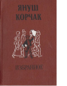

Януш Корчак. Избранное

повести-сказки "Король Матиуш Первый" и "Король Матиуш на необитаемом острове" (сокращенный перевод), повесть "Когда я снова стану маленьким" (с небольшими сокращениями), цикл лирических очерков "Лето в Ми-халувке", повесть "Слава", педагогические беседы "Правила жизни" и "Дневник" писателя. Книгу с интересом прочитают все, кого волнуют проблемы воспитания молодежи.